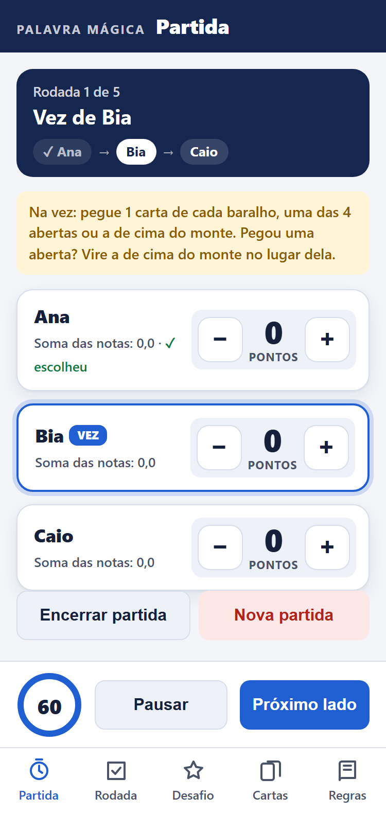
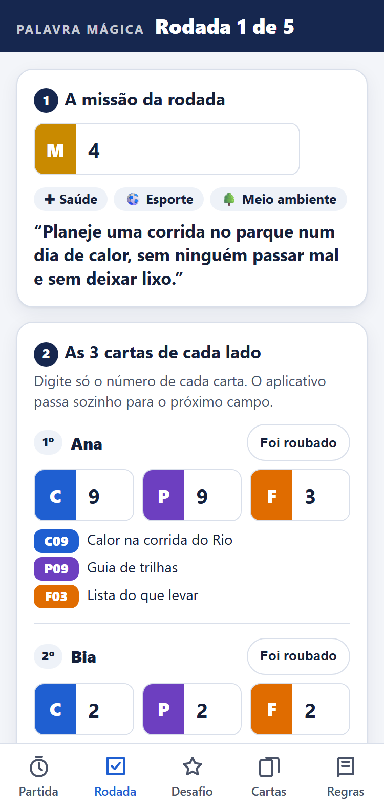
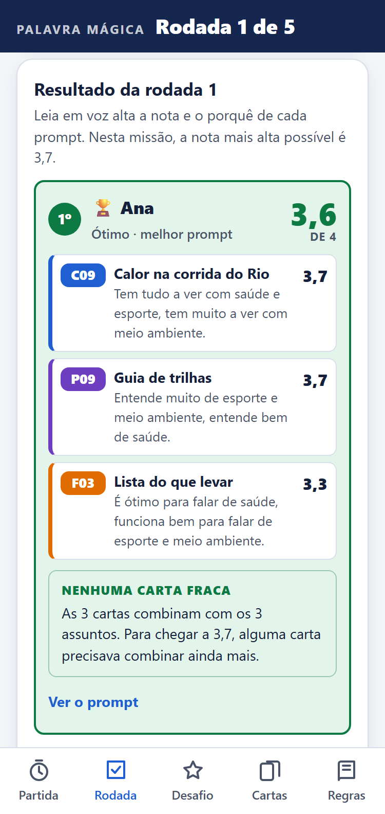

Manual do Professor
Um jogo de cartas para aprender a escrever bons prompts, sem internet na sala de aula.
“Planeje uma corrida no parque num dia de calor, sem ninguém passar mal e sem deixar lixo.”
Pense: quem entende destes 3 assuntos? Que situação junta os 3? Que formato ajuda quem vai ler?
Calor na corrida do Rio
“No Rio de Janeiro, a corrida da escola vai ser no parque, num dia de calor forte.”
Guia de trilhas
Leva grupos para caminhar na mata, cuida de quem se cansa e ensina a proteger a natureza.
No prompt:
“Você é guia de trilhas.”
Lista do que levar
Coisas para marcar antes de sair: água, protetor solar, boné e saco para o lixo.
Para quem é: alunos do 6º ano do Ensino Fundamental até o Ensino Médio. Foi pensado para escolas sem internet ou com internet ruim: na mesa, os alunos só usam cartas de papel, e o aplicativo do professor funciona sem internet.
Um prompt é o pedido que a gente escreve para uma inteligência artificial (IA) responder. Quanto mais claro o pedido, melhor a resposta. No jogo, um prompt tem 4 partes, e cada parte é uma carta: a missão diz o que fazer, e cada lado escolhe as outras 3.
Guia de trilhas
Leva grupos para caminhar na mata, cuida de quem se cansa e ensina a proteger a natureza.
No prompt:
“Você é guia de trilhas.”
Calor na corrida do Rio
“No Rio de Janeiro, a corrida da escola vai ser no parque, num dia de calor forte.”
“Planeje uma corrida no parque num dia de calor, sem ninguém passar mal e sem deixar lixo.”
Pense: quem entende destes 3 assuntos? Que situação junta os 3? Que formato ajuda quem vai ler?
Lista do que levar
Coisas para marcar antes de sair: água, protetor solar, boné e saco para o lixo.
PersonaVocê é guia de trilhas.
ContextoNo Rio de Janeiro, a corrida da escola vai ser no parque, num dia de calor forte.
MissãoTarefa: planeje uma corrida no parque num dia de calor, sem ninguém passar mal e sem deixar lixo.
FormatoResponda em formato de lista do que levar.
O aplicativo dá a nota: 3,6 de 4
C09 · 3,7 Tem tudo a ver com saúde e esporte, tem muito a ver com meio ambiente.
P09 · 3,7 Entende muito de esporte e meio ambiente, entende bem de saúde.
F03 · 3,3 É ótimo para falar de saúde, funciona bem para falar de esporte e meio ambiente.
| Carta | A pergunta que o aluno aprende a fazer | Por que a resposta melhora |
|---|---|---|
| Missão | O que eu quero? | Um pedido claro diz para a IA o que fazer. Cada missão junta 3 assuntos, como saúde, esporte e meio ambiente. |
| Contexto | Onde estou e o que está acontecendo? | A IA não sabe onde você mora nem o que está acontecendo. Contar a situação deixa a resposta certa para aquele lugar. |
| Persona | Quem a IA vai ser? | Pedir que a IA responda como alguém que entende do assunto (um guia de trilhas, uma fisioterapeuta) muda as palavras e o cuidado da resposta. |
| Formato | Como a resposta deve chegar para quem vai ler? | O mesmo conteúdo ajuda mais ou menos conforme a forma: lista para quem vai sair de casa, alerta no celular para quem precisa saber na hora. |
Por que a nota. Cada carta combina mais ou menos com cada assunto, de 1 a 4. Um bom prompt combina com os 3 assuntos da missão: não adianta a persona entender muito de um assunto só. Os números ficam escondidos no aplicativo, então a cada rodada o aluno lê as cartas e pergunta: esta carta ajuda nos 3 assuntos? Depois, o aplicativo diz por que cada prompt perdeu pontos.
São 57 cartas, com frente e verso. O código no canto de cima (como M04 ou C09) é o que você digita no aplicativo. As missões mostram os 3 assuntos da rodada: ✚ Saúde · ⚽ Esporte · 💻 Tecnologia · 🌳 Meio ambiente.
“Planeje uma corrida no parque num dia de calor, sem ninguém passar mal e sem deixar lixo.”
Pense: quem entende destes 3 assuntos? Que situação junta os 3? Que formato ajuda quem vai ler?
Missão
9 cartas
O pedido e os 3 assuntos. Fica aberta no meio da mesa durante a rodada.
Uma por rodada. Depois, sai do jogo.
Calor na corrida do Rio
“No Rio de Janeiro, a corrida da escola vai ser no parque, num dia de calor forte.”
Contexto
16 cartas
A situação: onde é e o que está acontecendo.
Cada lado escolhe 1 por rodada.
Guia de trilhas
Leva grupos para caminhar na mata, cuida de quem se cansa e ensina a proteger a natureza.
No prompt:
“Você é guia de trilhas.”
Persona
16 cartas
Quem a IA vai ser ao responder, o que essa pessoa faz e como ela entra no prompt.
Cada lado escolhe 1 por rodada.
Lista do que levar
Coisas para marcar antes de sair: água, protetor solar, boné e saco para o lixo.
Formato
16 cartas
Como a resposta chega para quem vai ler. O desenho mostra a forma.
Cada lado escolhe 1 por rodada.
MISSÃO
o pedido da rodada
Palavra Mágica
CONTEXTO
a situação
Palavra Mágica
PERSONA
quem responde
Palavra Mágica
FORMATO
como a resposta chega
Palavra Mágica
O verso
Mostra de que baralho é a carta. Assim os montes ficam virados para baixo sem se misturar.
Os números escondidos
Cada contexto, persona e formato tem um número de 1 a 4 para cada assunto. A carta não mostra: só o aplicativo e o gabarito.
| P09 | ✚ | ⚽ | 💻 | 🌳 |
|---|---|---|---|---|
| Guia de trilhas | 3 | 4 | 1 | 4 |
Na M04 (✚ ⚽ 🌳): (3 + 4 + 4) ÷ 3 = 3,7.
Na M01 (✚ ⚽ 💻): (3 + 4 + 1) ÷ 3 = 2,7, porque essa persona não entende de tecnologia.
Como imprimir: o arquivo de cartas tem 7 folhas A4 de frente, cada uma seguida da folha do verso. Imprima colorido, de preferência em papel mais grosso (cartolina ou papel de 180 g). Cole cada verso atrás da sua frente antes de cortar, ou imprima dos dois lados do papel, virando na borda longa. Corte nas linhas tracejadas: cada folha tem até 9 cartas do tamanho de uma carta de baralho, todas do mesmo baralho. Guarde cada jogo num envelope.
“Planeje uma corrida no parque num dia de calor, sem ninguém passar mal e sem deixar lixo.”
Pense: quem entende destes 3 assuntos? Que situação junta os 3? Que formato ajuda quem vai ler?
| Modo | Quantos alunos | Como fica |
|---|---|---|
| Duelo | 2 a 4 | 1 contra 1, ou dupla contra dupla (cada dupla é um lado). |
| Mesa | 3 a 10 | 3 a 5 lados, cada um por si. Cada lado é 1 aluno ou 1 dupla. |
| Turma | até 40 | Até 5 grupos, numa mesa grande ou no chão. Cada grupo decide junto, e quem compra as cartas troca a cada rodada. Com uma turma grande, imprima mais de um jogo e faça várias mesas. |
Dica: no modo Turma, escreva no quadro a ordem dos grupos. Enquanto um grupo escolhe, os outros podem ir pensando em quem entende dos 3 assuntos da missão.
Todos escolheram? Todos viram as cartas, e o professor confere no aplicativo. O melhor prompt ganha 1 ponto. As cartas voltam para os montes e a missão sai do jogo.
aA missão é a M04.
“Planeje uma corrida no parque num dia de calor, sem ninguém passar mal e sem deixar lixo.”
Pense: quem entende destes 3 assuntos? Que situação junta os 3? Que formato ajuda quem vai ler?
bNa sua vez, o Lado 1 compra 3 cartas de cada baralho e fica com as que juntam saúde, esporte e meio ambiente (em verde). As outras 6 voltam para os montes.
Calor na corrida do Rio
“No Rio de Janeiro, a corrida da escola vai ser no parque, num dia de calor forte.”
Árbitro de vídeo
“No campeonato da cidade, os jogos têm árbitro de vídeo e placar eletrônico.”
Vale do Silício
“No Vale do Silício, as empresas criam aplicativos usados no mundo todo.”
Guia de trilhas
Leva grupos para caminhar na mata, cuida de quem se cansa e ensina a proteger a natureza.
No prompt:
“Você é guia de trilhas.”
Fisioterapeuta de um time
Cuida do corpo dos jogadores e ajuda quem se machucou a voltar a jogar.
No prompt:
“Você é fisioterapeuta de um time.”
Programador de banco
Escreve programas para os computadores de um banco.
No prompt:
“Você é programador de banco.”
Lista do que levar
Coisas para marcar antes de sair: água, protetor solar, boné e saco para o lixo.
Tela de aplicativo
Como a tela de um aplicativo: a meta do dia, um botão e um aviso.
Resumo em 2 frases
Só o mais importante, em 2 frases.
cO Lado 2 escolhe 3 cartas de saúde e esporte e esquece o meio ambiente:
Vôlei com dor nas costas
“O time de vôlei da escola tem muitos jogadores com dor nas costas.”
Fisioterapeuta de um time
Cuida do corpo dos jogadores e ajuda quem se machucou a voltar a jogar.
No prompt:
“Você é fisioterapeuta de um time.”
Ficha de treino
Os exercícios do dia, o tempo de cada um e a pausa para beber água.
dO professor digita a missão e as cartas de cada lado. O aplicativo dá 3,6 para o Lado 1 e 3,0 para o Lado 2 e explica por que o Lado 2 perdeu pontos: o contexto C02 não tem nada a ver com meio ambiente; a persona P02 não entende de meio ambiente; o formato F02 não ajuda a falar de meio ambiente. A missão pede meio ambiente (o lixo no parque).
eO Lado 1 ganha 1 ponto. As cartas voltam para os montes, embaralhadas, e a M04 sai do jogo. Na próxima rodada, o Lado 2 começa.
O aplicativo do professor guarda os pontos, marca o tempo de cada lado e dá a nota de cada prompt. Ele abre no navegador do celular, neste endereço:
lucas-ibmec.github.io/ibmec-metodosageis-nexus-jogo/app



As páginas Desafio (o desafio final), Cartas (procurar uma carta pelo código ou pelo nome, com os números dela) e Regras (o resumo das regras) também funcionam sem internet. Sem celular, use o gabarito impresso: ele tem os mesmos números e a mesma conta.
Depois de 5 rodadas, ganha quem tiver mais pontos. Empate: ganha quem somou as maiores notas nas 5 rodadas. O aplicativo faz a conta e avisa.
| Se acontecer | Faça assim |
|---|---|
| Dois prompts empatam como o melhor | Os dois ganham 1 ponto. O aplicativo já dá o ponto para todos os empatados. |
| Acabou o tempo da vez | O lado escolhe agora as 3 cartas e devolve as outras 6. |
| A turma não concorda com uma nota | Peça para o lado explicar a escolha. A palavra final é sua: você pode mudar os pontos com os botões + e − do placar. |
| A aula está acabando | Toque em Encerrar partida: o aplicativo mostra quem está na frente. |
| Sem celular ou sem bateria | Use o gabarito: some os números das cartas nos 3 assuntos da missão. A maior soma ganha o ponto. |
Antes · 2 minutos
Leia os 4 passos da rodada (estão na página Regras do aplicativo). Depois, faça uma vez de exemplo em voz alta: compre 3 de cada e diga por que escolheu cada carta.
Durante
Na hora de conferir, leia em voz alta a nota e o porquê de cada prompt. Pergunte: qual assunto ficou de fora? Que carta teria ajudado?
No fim do resultado, o aplicativo mostra as melhores cartas do jogo para aquela missão.
Depois · 5 minutos
O desafio final, sem cartas: na página Desafio, sorteie um problema da escola. Cada lado escreve um prompt com as 4 partes (persona, contexto, tarefa e formato) e lê em voz alta. Toque em Sim ou Não nas 4 perguntas; quem acerta as 4 aprendeu e ganha um prêmio escolhido por você.
Para conversar com a turma: usar a IA com cuidado
O professor pediu que o jogo e a documentação fossem em português (Revisão da Sprint 4, em 04/11/2026). A regra que seguimos: se existe palavra em português que diz o mesmo, usamos a palavra em português. Por isso, o material diz aplicativo e não app, partida de teste e não playtest, e o nome do jogo é Palavra Mágica. Ficam em outra língua só os nomes próprios e as palavras que os alunos e o professor vão encontrar com esse nome fora da sala.
| Palavra | Língua | O que quer dizer | Por que fica assim |
|---|---|---|---|
| prompt | inglês | O pedido (o texto) que a gente escreve para uma IA responder. | É o nome usado nos aplicativos de IA, nas notícias e no trabalho. Aprender o nome certo faz parte do que o jogo ensina. Em português, seria “comando” ou “pedido”. |
| persona | latim | O papel que alguém assume. No jogo, quem a IA vai ser ao responder. | É o nome usado nos guias de como escrever prompts. A palavra vem da máscara que os atores usavam no teatro romano. |
| internet | inglês | A rede que liga computadores e celulares do mundo todo. | Todo mundo no Brasil usa essa palavra, e não há outra em português de uso comum. |
| nomes de lugares | várias | As cidades dos contextos, como Seul, Tóquio, Recife e Manaus. | São nomes próprios. Usamos a forma em português quando ela existe (Nova York, Copenhague, Vale do Silício). |
| Antes | Agora | Onde |
|---|---|---|
| Magic Prompt | Palavra Mágica | nome do jogo, nas cartas, no manual e no aplicativo |
| app, companion app | aplicativo, aplicativo do professor | cartas, regras, gabarito, manual e telas do aplicativo |
| playtest | partida de teste | folha de regras e aplicativo |
| smartwatch | relógio que mede o coração | carta C01 Relógio no campeonato e missão M03 |
| VAR | árbitro de vídeo | carta C14 Árbitro de vídeo |
| checklist | lista para marcar | carta F03 Lista do que levar |
| print, tutorial | tela, passo a passo | carta F11 Passo a passo com as telas |
| streamer | quem narra os jogos ao vivo pela internet | carta P14 Narradora de jogos na internet |
Também são palavras do português, já com a nossa grafia: futsal, vôlei, surfe e gincana.
| Palavra | Língua | O que quer dizer | Por que fica assim |
|---|---|---|---|
| Scrum, Kanban e ScrumBan | inglês e japonês | Nomes de métodos ágeis. Kanban quer dizer “placa” ou “cartão de sinalização” em japonês; ScrumBan junta os dois. | São nomes próprios dos métodos estudados na disciplina. |
| Sprint | inglês | Corrida curta: cada ciclo de trabalho de 1 ou 2 semanas. | O Guia do Scrum em português mantém o nome em inglês. |
| Backlog | inglês | A lista de tudo o que falta fazer no produto (ou na sprint). | Idem: nome do Guia do Scrum. |
| Product Owner (PO), Scrum Master (SM) e Devs | inglês | Os papéis do time: quem decide o produto, quem cuida do método e quem desenvolve. | Idem: nomes dos papéis no Guia do Scrum. |
| To do, Doing, Sprint Done, Feedback, Postponed/Fixed e Due Date | inglês | A fazer, fazendo, pronto na sprint, esperando opinião, adiado ou fixo, e prazo. | São as colunas e os campos do quadro modelo que o professor da disciplina deu. Mantivemos para ele reconhecer o quadro. |
| WIP | inglês | “Trabalho em andamento”: o limite de tarefas na coluna Fazendo. | Termo do Kanban, usado com esse nome na aula. |
| Weekly, Keep / Stop / Start e Planning Poker | inglês | Reunião semanal; o que manter, parar e começar (na retrospectiva); estimar o tamanho das tarefas com cartas. | Nomes usados nas aulas da disciplina. |
| companion app | inglês | O aplicativo do professor que acompanha o jogo. | Foi o nome usado pelo cliente na Revisão da Sprint 1 e ficou no tema 2 do quadro. No material do jogo, dizemos “aplicativo do professor”. |
| playtest | inglês | Partida de teste do jogo com jogadores de verdade. | Aparece no nome de algumas tarefas do quadro. No material do jogo, dizemos “partida de teste”. |
| MVP | inglês | Produto mínimo viável: a menor versão do produto que já dá para testar. | Aparece no nome de uma tarefa do quadro; é a sigla usada em projetos ágeis. |
| Roadmap e pitch | inglês | O mapa das entregas ao longo das sprints; a apresentação curta do produto. | O roadmap é um cartão do quadro; pitch é como a disciplina chama a apresentação final (18/11). |
| NEXUS | latim | Ligação, conexão (em português, “nexo”). | É o nome do nosso grupo. |
| Notion, Miro, Figma, GitHub, HTML, CSS e JavaScript | inglês | Os programas e as linguagens que usamos para organizar e fazer o projeto. | São nomes próprios, sem tradução. |